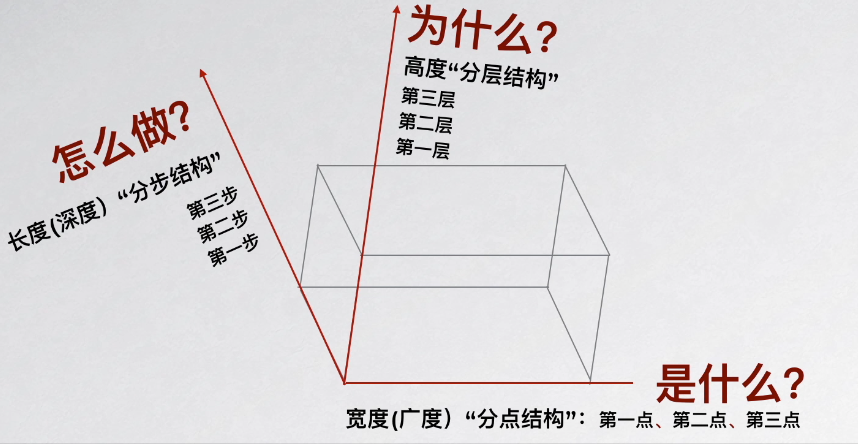

1.解构“三维立体思维”
1）单维思维模式：是什么？为什么？怎么做？突出是什么
2）多维思维模式：


2.“三维立体”思维模型
1）“三维六度”思维模型

2）三维立体思维模型

3.自尊五感：帮助建立自尊、树立信心的五大元素
1）自尊五感
- 安全感：即身心、情感都感到舒服，安全感是渴望稳定、安全的心理需求
- 独特感：感到自己是独特的，清楚个人价值，清楚自己在现实中的特性、角色等
- 联结感：即社交能力，在人际关系方面感到被接纳、认同、欣赏以及尊重，并有归属感
- 能力感：觉得自己有能力解决问题，对于自己能够独立完成重要的事情感到自豪，并有成就感
- 方向感：能够规划自己的人生和生活，有目标感，清楚内心的需求
2）安全感表现：可以以从容的态度处理生活中的变化；较少表现出压抑或焦虑不安的心情；能与周围的人与环境建立信任关系；有信心离开熟悉的人或环境一段时间；能自在地与相熟的人作较亲密的身体接触
3）独特感表现：可以准确地描述自己的能力、特点和角色定位；能够用自己的方式表达自己，敢于与别人不同；可以客观地面对自己和别人；可以自在地接受别人的赞美；可以清楚地表达自己的情绪
4）联结感的表现：知道友谊的意义，能与人建立人际关系；觉得自己受到别人重视；能与人合作，乐于和他人分享自己的感受；关心别人的感受，拥有同理心；有恰当的交友技巧；在群体中可泰然自若
5）能力感的表现：知道自己的能力，能以客观的角度去评价自己过往的表现和能力；主动迎接挑战，愿意冒险；接纳自己的不足，并从失败中学习；愿意和别人分享自己的意见及想法；不卑不亢；能妥善处理失败的不快情绪，也能确认自己的成就
6）方向感的表现：做事独立自主，生活有目标有方向；可以根据客观情况制定出可行的目标；解决问题时，会考虑不同的做法；能够为自己的行为负责任，可以预判事情可能出现的结果
4.个人成长突破圈：帮助突破个人瓶颈，达成新的突破目标
1）个人成长突破圈
- 舒适区：感到舒服的、熟悉的、安全的，有安于现状感的区域
- 挣扎区：感到恐慌的、焦虑的、痛苦的，有不堪重负感的区域
- 成长区：感到新颖的、触电的、充实的，有挑战自我感的区域
- 目标区：感到突破的、成功的、满足的，有大功告成感的区域
2）突破圈
- 走出安逸的舒适区，进入痛苦的挣扎区
- 站稳住痛苦的挣扎区，过渡到学习的成长区
- 不满足学习的成长区，突破到收获的目标区
- 新的目标进入舒适区，新矛盾开启新的循环
3）喜欢舒适是常态：当安于现状的状态导致我们的生活、工作受到阻碍、甚至倒退时，我们就会思考如何走出安逸的舒适区，摆脱掉眼前的现状，获得新的脚步、新的希望
4）挣扎是痛苦的：在挣扎区内，很考验一个人的勇气和承受力，承受得住扔掉熟悉的、安全的，拥抱恐慌的、焦虑的，所带来的痛苦和压力
5）学习需要目标：在成长区内，需要是目标清晰的，知道自己要学习的是什么、学习的标准是什么、学习要达到什么样的目标成果，照着这个目标去方向明确地学习
6）达成目标才是突破：日积月累，量变到质变，花开结果，我们成功进行到目标区，达成了自己的学习成长目标，成功突破了自我，掌握了新的技能
7）熟悉新技能之后进入新的舒适区
5.团队协作五层次：提升团队协作，搭建高效团队
1）建立信任：成员间愿意承认自己的弱点和错误；主动寻求成员的帮助；欢迎成员对自己所负责的领域提出问题和给出关注；愿意给成员提出反馈意见和帮助；在工作面临问题风险时，会相互提醒；赞赏并相互学习各自的技术和经验；必要时向成员道歉；珍惜集体会议、集体活动或其他团队协作的机会
2）掌控冲突：团队会议具备头脑风暴的氛围，轻松活跃；团队成员间可以公平地互相吸收意见，对于有争议的问题可以一起讨论解决；
3）全力投入：团队可以制定出明确的工作方向和工作重点；在市场竞争中不犹豫、勇往直前，具备快人一步的工作作风；必要时果断地调整工作方向，不犹犹豫豫不过多内疚；充分自信，不惧怕失败，具备从失误中学习的能力；能够快速解决实际问题，将形式主义控制在最小范围
4）共担责任：有责任一起承担，避免让表现不尽如意的成员感到压力，并帮助其尽快改进工作，不把责任推脱到团队领导一人身上；尊重以高标准要求工作的团队成员；具备明确的时间观念
5）关注结果：重视工作产出，可战胜竞争对手；重视团体利益大于人个利益；有得力的、具备创造力的新成员加入；凝聚力强，不会轻易解体
6.5W2H：让工作生活更有逻辑条理的最简单方法
1）七问分析法：
- WHAT，是什么？目的是什么？做什么工作？
- WHY，为什么？为什么要这么做？理由何在？原因是什么？
- WHO，谁？由谁来承担？谁来完成？谁负责？
- WHEN，何时？什么时间完成？什么时机最适宜？
- WHERE，何处？在哪里做？从哪里入手？
- HOW，怎么做？如何提高效率？如何实施？方法怎样？
- HOW MUCH，多少？做到什么程度？数量如何？质量水平如何？费用产出如何？
2）三维拆解

7.FAB法则：提高说服型演讲、沟通、销售成功率的黄金法则
1）FAB法则
- F特点
- A优点
- B利益点
2）三维拆解

3）因为….（属性），所以….（作用），意味着…..（客户得到的益处）
4）问题：
- 过分强调产品属性
- 将作用和益处混淆：作用是固定的，益处是特定的
- 益处的前提是需求
8.黄金圈法则：辅助营销让产品更具品牌号召力、观点更具说服力
1）应用流程化
- What：现象、成果，介绍现象、展示成果
- How：方法、措施，梳理方法、陈述措施
- Why：目的、理念，明确目的、建立理念
2）与FAB对比

9.金字塔原理：“MECE法则”头脑风暴常用工具
1.相互独立：异同
2.完全穷尽：有无
3.流程
- 确认问题
- 划分主干
- 细分支干
- 检查确认
10.SWOT分析法：帮助企业战略规划、个人职业规划
1.SWOT

2.流程
- 梳理要素S、W、O、T
- 填入《SWOT分析表》
- 组合要素，加以分析
- 填入《SWOT战略表》
- 指导下一步行动
11.SMART原则：帮助工作生活制定科学合理的目标
1.S明确性：制定目标需要是具体的、明确的、清晰的，而非笼统的
2.M衡量性：制定目标需要是可衡量的、可量化的、可以输出数据的
3.A可行性：制定目标需要是可达成的，是付诸努力后可以实现的
4.R相关性：制定目标需要与个人规划、岗位职责的大方向、总目标相关
5.T时限性：制定目标需要有时间限制，需要根据目标任务的轻重缓急来制定出相应的时间要求
12.波士顿矩阵：帮助管理者、创业者规划企业的产品组合、发展战略
1.四类产品
- 问题产品：高市场增长率、低市场占有率，发芽期，选择性投资战略
- 明星产品：高市场占有率、高市场增长率，成长期，增长战略
- 现金牛产品：低市场增长率、高市场占有率，成熟期，稳定战略
- 衰退产品：低市场增长率、低市场占有率，枯萎期，撤退战略
2.四象限矩阵图

13.心理定价策略：巧用顾客心理来调整定价，并扩大销量
1.心理定价策略是指：企业在给推向市场的产品定价时，利用顾客的消费心理因素，有意识地将产品价格定高些或低些，以满足消费者生理的和心理的、物质的和精神的多方面的需求，从而增加消费者对企业产品的偏爱和忠诚，达到扩大市场销量、获得最大效益的商业目标
2.定价策略
- 尾数定价：也称零头定价或缺额定价，即给产品一个零头数结尾的非整数价格，效果：便宜+精确+图个吉利
- 整数定价：即按整数而非尾数定价，是利用顾客“按质论价”的心理，适用于那些名牌优质商品，效果：方便+简洁+好记
- 声望定价：利用消费者仰慕品牌的心理来制定远高于其他同类商品的价格
- 习惯定价：消费者经常购买，形成了一种习惯价格
- 招徕定价：即有意将少数商品降价以招徕吸引顾客的定价方式
14.PEST分析模型：企业外部宏观环境因素分析
1.PEST分析模型：主要对政治、经济、社会和技术这四大类型来进行
2.P政治环境：主要包括一个国家或地区的政治制度、体制、方针政策、法律法规等
3.E经济环境：是指国民经济发展的总概况、国际和国内经济形式及经济发展趋势、企业所面临的产业环境和竞争环境等。主要包括：社会经济结构、经济发展水平、经济体制、宏观经济政策、当前经济状况，其他一般经济条件
4.S社会环境：是指一定时期整个社会发展的一般状况。主要包括社会道德风尚、文化传统、人口变动趋势、文化教育、价值观念 、社会结构等
5.T技术环境：主要包括社会技术水平、技术变迁、技术突破及变化趋势
15.商业模式画布：分析与设计商业模式、职场个人定位
1.商业模式画布：借助于九个方格，它可以将商业模式中的元素标准化，从而帮助创业者、企业管理者进行有效的商业模式分析
16.ORID-让演讲、沟通思路更清晰、更有逻辑
1.引导式讨论方法
2.ORID
- O客观性（事件），客观事物行为事实（我发现），一般是指我们通过感官获得的，比如看到的、听到的、触碰到的、闻到的、尝到的
- R反应性（情绪），内心产生什么感觉（我感到），前面的所见所闻，带来哪些情绪瓜，比如开心、失望、激动、好奇、恐惧、期待等
- I诠释性（理解），对于事件主观解释，对于前面的所见所闻，产生了哪些观点、见解、主张、意义、价值等
- D决定性（决定），下一步行动将如何（我决定），我们决定做些什么，来让前面的“所见所感所想”更好地落地
17.金字塔原理：“SCQA架构”让商务写作、沟通表达的结构更加清晰
1.SCQA
- S情景
- C冲突
- Q问题
- A答案
2.延伸结构
- 标准式：SCA，广告文案
- 开门见山式：ASC，与领导沟通
- 突出忧虑式：CSA，多运用于销售话术
- 突出信心式：QSCA，多用于项目中路演
3.与ORID
- SCQA，结构化表达工具，为自己的中心思想、观点来安排先后顺序
- ORID，思维引导工具，通过引导来激发大家思考
18.PDCA循环：让工作方法有章可循、工作质量得到保障
1.P计划，找出存在的问题差距，通过分析找出原因制定出改进计划
- 找出问题：分析现状，找出存在的问题，并确定需要改进的主要问题
- 罗列原因：罗列出导致问题发生的各种影响因素
- 分析主因：从这些影响中确定出主要因素
- 制定计划：针对主因制定出改进计划，计划中应包含目标效果
2.D执行，按照制定的计划去落实行动
- 实施计划：按既定计划实施执行，在实施的过程中若发现新的问题，应及时修改计划
3.C检查，对照计划，检查验证执行的效果，确认是否达到了计划的目标
- 检查结果：依据计划的要求，检查验收实际执行的结果，看是否达到预期的目标效果
4.A处理，根据检查的结果进行总结，把成功的经验和失败的教训都纳入有关样例、规程、制度之中，把未解决或新出现的问题转入下一个PDCA循环
- 沉淀标准：对检查的结果做总结，把成功的经验和失败的教训都纳入有关标准、规程、制度之中，以巩固已经取得的成绩
- 继续循环：将检查的结果中尚未解决的问题或新出现的问题，转入下一个PDCA循环的第一步去
19.STAR法则：科学面试工具，辅助备战面试、制作简历
1.S背景，面试者从事过的某项事件所处的背景，工作成绩背后多少和个人有关，多少和企业提供的平台、行业的特点、市场的状况有关
2.T任务，为完成上述事件所承担的工作任务，主要包含哪些工作任务，每项任务的具体内容是什么，可以了解式作经历和经验，确定工作和经验是否适合现在所空缺的岗位
3.A行动，为完成上述事件所采取的行动，以及这些行动是如何帮助他完成工作任务的，可以进一步了解他的工作方式、思维方式和行为方式
4.R结果，为完成上述工作任务后结果怎样、收获了什么，是成功，还是未完成，成功的原因是什么，失败的原因是什么，了解对经验教训的反思总结能力
20.GROW模型：帮助设定目标和寻找解决方案
1.G目标确定，明确自己真正期望的目标是什么
2.R现状分析，围绕目标梳理当下的资源与困难
3.O方案选择，先头脑风暴再挑选出最佳的方案
4.W行动计划，制定具体的行动计划并执行落实
5.GROW引导原则：鼓励赞赏、积极倾听、提出问题、引导反思、给予反馈、达成一致
21.AIDMA法则：了解消费者的消费行为模式，提升广告产品的成交率
1.A引起注意，抓住消费者眼球
2.I产生兴趣，通过该产品能满足消费者哪些需求，让消费者对广告的产品产生兴趣
3.D激发欲望，通过产品自身的卖点来刺激消费者的购买欲望
4.M强化记忆，在消费者记忆里扎根，需要强化产品的使用效果，最好能够场景化、有画面感
5.A促使行动，消除消费者最后一道心理防线，给他零风险承诺
22.马斯洛需求层次：认识自我需求、激励他人需求、留住公司员工
1.生理需求，吃、穿、住、行、睡，最直接的涨工资，增加收入
2.安全需求，人身安全，财产安全，健康、工作、家庭保障，强调规章制度，遵守法律法规，保障员工利益，兑现公司所承诺的福利待遇
3.社会需求，情感、归属，加强企业文化建设，多组织团队旅游、聚会，增加员工间来往机会
4.尊重需求，内部尊重、外部尊重，完善公司激励制度，认可员工，公开奖励
5.自我实现需求，发挥潜能，实现个人理想、抱负，为员工提供良好的职业发展路径，提供专业人才发挥潜能的机会和空间，善于放权
23.柯氏四级培训评估模式：让企业培训、个人知识学习的方向更加明确
1.反应层评估，评估学员的满意程度，对课程内容、讲师授课、培训组织、以及学习体验的满意程度，《培训满意调查问题》，操作简单、应用广泛，但不能代表培训结果
2.学习层评估，检查学员的学习效果，对知识、技能、态度等培训内容的理解和掌握程度，考试，操作难度比较大，实施情况有好有坏
3.行为层评估，考察学员的知识运用程度，学员的行为在培训前后是否发生的积极的变化，《行为评估观察表》，将理论型的陈述 性知识转化为流程标准；将操作型的程序性知识转化为动作标准；难度大
4.结果层评估，计算培训产出的经济效益，是否能给企业的经营数据带来具体而直接的贡献，销售增长率、生产率、事故率等，所需费用最高，操作难度最大